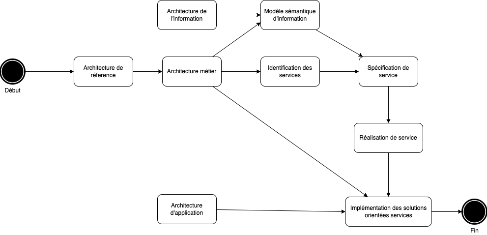

3 Méthodologie SOA
Nous avons défini la SOA comme un style architectural qui promeut le concept de services alignés sur les objectifs de l’entreprise en tant qu’unité fondamentale de conception, de construction et de composition de solutions d’entreprise. Cette partie du document est consacrée au rôle de la méthodologie SOA et ses différentes étapes dans la création des solutions d’entreprise.
3.1 Présentation générale de la méthodologie SOA.
Les principales forces qui façonnent l’architecture SOA et ses principaux éléments sont les suivants :
3.1.1 Les moteurs d’activité de l’entreprise (drivers)
Ce sont les forces qui animent l’entreprise et la SOA. Ce sont entre autre la stratégie, la concurrence, les forces du marché, les forces réglementaires, etc. Elles se combinent tous pour piloter l’architecture métier (modèle) et façonner la mesure et le retour d’information pour la gestion des performances à l’échelle de l’entreprise.
3.1.2 Le modèle d’entreprise (Business Model)
Le modèle d’entreprise est la représentation des ressources et des processus d’entreprise nécessaires pour atteindre les objectifs opérationnels, tactiques et stratégiques de l’entreprise. Avoir un modèle d’entreprise est essentiel à l’alignement réussi des services avec les buts et objectifs de l’entreprise, et par conséquent au succès global de la mise en œuvre de la SOAs
3.1.3 Le modèle sémantique d’information (The semantic information model)
Le modèle sémantique d’information définit les informations mmétiers communes pour une entreprise donnée (telles que le client, l’accord, etc.). Ces objets forment une ontologie des données d’entreprise en définissant des concepts communs (et leur contenu) qui décrivent les opérations de l’entreprise. L’utilisation du modèle de la sémantique d’information pour définir les interfaces de services métier conduit à la création de services sémantiquement interopérables, une sémantique de la SOA.
3.1.4 Les autres aspects qui permettent à SOA d’apporter de la valeur
Ce sont les indicateurs clés de performance (KPI) et rationalisation du portefeuille. Les KPI permettent une évaluation quantitative de l’impact de la SOA et permettent de mesurer et d’optimiser les processus et services métier. La rationalisation du portefeuille permet à l’entreprise de simplifier et de consolider l’infrastructure, les applications et les données, là où la SOA joue un rôle de premier plan dans la mise en œuvre des activités de consolidation
3.1.5 Implémentation
En termes de mise en œuvre, les principaux aspects sont les processus métier et les services. Les processus métier orchestrent l’exécution des services métier pour implémenter les capacités de l’entreprise comme spécifié dans le modèle métier, par exemple, le traitement des commandes ou le traitement des réclamations.
Les processus métier sont généralement associés à des objectifs opérationnels et à des objectifs métiers (tels que le traitement des réclamations d’assurance ou le traitement du développement technique) sous la forme de résultats spécifiques qui peuvent être mesurés par rapport à des KPI. Ces KPI sont collectés dans le cadre de la mise en œuvre du processus et sont généralement utilisés pour évaluer la performance organisationnelle
3.1.6 Les services
Les services implémentent des fonctions métiers spécifiques à l’entreprise et accèdent aux données et ressources métiers Des services bien définis et alignés sur l’entreprise sont un élément essentiel d’une implémentation SOA d’entreprise flexible et extensible. La structure des services leur permet d’être développés et déployés indépendamment.
3.1.7 L’information
L’information représente les ressources de données de l’entreprise Les données résident dans une variété d’applications et de formats différents. Différents niveaux de données sont utilisés par différents niveaux d’implémentation de la SOA. Le modèle sémantique d’information définit les données des processus métier et des services. Les informations transmises dans les processus métier sous forme de documents sont basées sur le modèle sématique d’information. Les documents fournissent une forme de message sémantique entre les processus et les services. La SOA définit les mécanismes de transformation des données de leur format opérationnel natif en données sémantiques nécessaires aux processus métier.
3.1.8 Les documents
Les documents peuvent représenter des entités juridiques (telles que des documents financiers, des polices d’assurance et des réclamations, et des réglementations gouvernementales) qui définissent les obligations de l’entreprise et de ses partenaires. Les documents sont une partie essentielle des entreprises modernes et doivent être inclus dans les implémentations SOA (avec le reste des informations de l’entreprise) en tant que ressources de premier choix.
3.1.9 Les systèmes existants
Les informations des systèmes et applications existants sont mises à la disposition des processus et des services via une couche de virtualisation des données.
Les fonctions des systèmes et applications existants sont mises à la disposition des services via des services d’intégration qui exposent les fonctionnalités existantes via de nouvelles interfaces de service.
3.2 Méthodologie
La mise en œuvre efficace de solutions orientées services est une entreprise complexe qui doit prendre en compte tous ces différents aspects. Cela nécessite une coopération entre de nombreux groupes au sein d’une entreprise, y compris la direction, les chefs d’entreprise, l’architecture, l’organisation du développement, les opérations, etc. Au niveau de l’entreprise, cela ne serait pas possible sans une méthodologie bien définie, décrivant les principales étapes et produits de travail, ainsi que les rôles et responsabilités de chaque groupe participant. La méthodologie consiste en ces différentes activités.
3.2.1 L’architecture de référence
Définir les aspects importants de l’architecture de référence SOA, en particulier ce qu’est un service, les types de services et leurs relations, les concepts et processus de conception et de mise en œuvre, et les relations avec d’autres architectures et communications.
3.2.2 Définition de l’architecture métier
La première étape consiste à définir l’architecture métier de l’entreprise. Cela influence les processus, les services, les informations et les solutions d’entreprise qui seront créés.
3.2.3 Identification des services
Cette étape consiste à identifier un ensemble de services dans le contexte de l’entreprise qui prend en charge l’architecture métier. L’ensemble des services constitue l’inventaire des services.
3.2.4 Définition du modèle sémantique d’information
Cette étape consiste à créer un modèle d’informations d’entreprise qui définit la sémantique partagée des processus et des services. Cette activité se fait souvent en parallèle avec l’identification des services. A noter que le modèle sémantique est influencé à la fois par l’architecture métier et par l’architecture de l’information.
3.2.5 La spécification des services
On y crée des contrats de service qui peuvent être utilisés au moment de la conception pour la sélection des services appropriés dans les solutions. La spécification de service inclut l’interface de service ainsi que d’autres informations d’usage et de dépendance.
3.2.6 Réalisation des services
Cette étape consiste à concevoir et mettre en œuvre les services.
3.2.7 L’implémentation de solutions orientées services
Cette étape consiste à créer des solutions d’entreprise à partir de services.Notez également que les solutions orientées services sont influencées par l’architecture de l’application. Il est important de savoir qu’il ne s’agit pas d’un processus linéaire en cascade. Vous n’avez pas besoin d’avoir une architecture métier complète ou un inventaire de services complètement spécifié avant de pouvoir commencer à concevoir et à mettre en œuvre des services. Le processus est itératif et incrémental. Vous commencez par créer une architecture métier de haut niveau et un inventaire des services. Ensuite, vous mettez en œuvre le premier ensemble de services pour prendre en charge des objectifs commerciaux spécifiques. Au fur et à mesure que vous apprenez de ce processus, vous mettez à jour votre architecture SOA, votre architecture métier, votre inventaire de services, vos normes, votre gouvernance, etc. Ensuite, vous commencez à créer votre prochain ensemble de services.
Le schéma ci-dessous nous montre les différentes étapes de la SOA.

3.3 Définir l’architecture de réference de la SOA
Avant de se lancer dans l’aventure de la mise en place de la SOA dans une entreprise, il faudrait avant tout initier l’architecture de référence. Cette étape peut prendre plus ou moins de temps en fonction des réalités de chaque entreprise.
Il n’est pas important d’avoir tout élaboré avant de commencer ou d’avoir des modèles complets, des documentations, des normes et une gouvernance en place avant de permettre la conception et la construction du premier service. Mais, il est important d’avoir une idée de ce que vous faites. Il est important d’avoir une vision de haut niveau de l’architecture et du contexte que l’architecture fournit en termes de hiérarchie de services, d’inventaire de services et de modèle d’informations sémantiques, avant de créer de très nombreux services.
Il est récommandé de créer ce que l’on appelle une architecture minimale. L’architecture minimale détermine les quelques éléments qui doivent absolument être standardisés pour répondre aux objectifs de l’entreprise et les spécifie clairement. Ensuite, il met en place une vision architecturale de la manière dont le reste de l’architecture pourrait être défini, ainsi qu’un processus d’amélioration et d’amélioration continue et incrémentielle de l’architecture.
La feuille de route de mise en oeuvre de l’archicture de réference dépend des exigences et circonstances propres à l’entreprise. A travers les exemples qui suivent nous allons présenter les concepts de base et le contenu d’une feuille de route pour une architecture SOA.
3.3.1 L’architecture minimale.
L’architecture minimum doit spécifier :
Ce qu’est un service : Les types et granularités des services. Par exemple, les services métiers, de domaine, utilitaires, d’intégration, externes et de base
Les fonctions et les interfaces requises : Interfaces ou autres fonctions que les services doivent utiliser ou prendre en charge. Par exemple, tous les services doivent prendre en charge l’interface de gestion et utiliser le service de journalisation.
L’infrastructure technique : Quels services technologiques utilisent pour communiquer. Par exemple, les services Web conformes au profil de base WS-I v1.1 et profil de sécurité v1.0.
Le modèle d’information sémantique de haut niveau : Identifier les principales entités et documents métiers de l’entreprise. De quelles informations ont-ils besoin en commun pour atteindre les objectifs de l’entreprise ? Quelles informations doivent être partagées entre les services ? Par exemple, une entité client consolidée prend en charge l’objectif métier d’avoir une vue client unique. Le modèle de haut niveau doit identifier 20 à 40 entités métiers et documents.
L’inventaire de service initial : Identifier les principaux groupes de services et services nécessaires pour prendre en charge les objectifs et les processus de l’entreprise. Déterminer une structure organisationnelle (telle qu’un secteur d’activité ou un domaine fonctionnel). Intégrer les normes ou les modèles appropriés de l’industrie. L’inventaire initial doit identifier 30 à 50 services et groupes de services.
Le modèle métier de haut-niveau : Identifier les principaux processus métier de l’entreprise et les processus communs qui se produisent dans les domaines de l’entreprise. Identifier les capacités sous-jacentes nécessaires pour prendre en charge ces processus. Le modèle métier de haut niveau doit identifier 10 à 20 processus majeurs et 20 à 40 capacités.
Le processus d’identification, de spécification et de conception des services : il décrit comment l’architecture et le contexte de l’entreprise s’intègrent dans le processus de développement et le supportent.
Le processus du cycle de vie de l’architecture : Il s’agit d’un mécanisme de rétroaction pour la mise à jour et l’amélioration constantes de l’architecture.
La feuille de route : La feuille de route aborde au moins deux domaines. Le premier est un ordre de priorité approximatif de mise en œuvre des services basé sur les dépendances, les points communs et l’utilité. Cela ne spécifie pas de calendrier, ni ne prend en compte d’autres facteurs métiers, mais elle fournit une vision initiale pour la conception de l’inventaire des services. Le second est un plan de haut niveau pour concevoir l’architecture. L’architecture minimale devrait prendre entre 4 et 8 semaines pour produire, selon la taille et la complexité de l’entreprise, ainsi que l’expérience, la capacité et le nombre d’architectes.
3.3.2 Point de contrôle de 9 mois
Une fois que l’architecture (l’architecture minimale) est en place, vous pouvez commencer à implémenter les services et les utiliser dans les solutions de l’entreprise. Souvent, cela commence par un projet à petite échelle ou pilote pour vraiment comprendre comment le faire, puis s’étendre à partir de là. L’architecture et le processus doivent être mis à jour en fonction des connaissances acquises grâce à ce processus. Après 6 à 9 mois, les aspects d’architecture supplémentaires suivants doivent avoir été développés :
La gouvernance : des processus de gouvernance au moment de la conception et du déploiement sont mis en place.
Les métriques : des mesures pour démontrer l’utilisation et la valeur de la SOA sont définies. La mise en place des métriques est lancée.
Le métamodèle de services : une définition de service formalisée est créée sous forme d’un métamodèle.
Les services d’intégration : des modèles et des techniques de mise en œuvre des services d’intégration sont en place.
Les modèles métiers et d’information mis à jour : les modèles sont mis à jour pour prendre en compte les implémentations antérieures.
L’inventaire des services et feuille de route mis à jour : l’inventaire des services et la feuille de route sont mis à jour pour prendre en compte les services existants et pour tenir compte des nouveaux modèles métierss.
3.3.3 Point de contrôle de 18 mois
En général, autour du prochain point de contrôle, l’architecture et l’organisation sont prêtes pour un déploiement à plus grande échelle de la SOA. Pour que cela soit efficace, l’architecture et les processus doivent être suffisamment complets et clairs pour un public plus large de développeurs. À ce stade, les aspects suivants auraient dû être introduits :
L’archictecture mise à jour : l’architecture est mise à jour en fonction de l’expérience et des projets passés. Il est également plus documenté.
Le processus formalisé : les processus de gouvernance et de développement sont améliorés, formalisés, documentés et mesurés.
Le référentiel de la conception : un référentiel au moment de la conception est introduit et intégré à l’inventaire des services.
Versionnage (Versioning) : les politiques, les procédures et l’infrastructure de gestion des versions sont en place.
BPM (Business Process Model) : les processus métier sont conçus à l’aide de services pour implémenter des tâches de processus. Les règles et les contraintes sont clairement définies.
SaaS : les services fournis par des fournisseurs externes ou des fournisseurs de logiciels en tant que service constituent une partie de l’inventaire global des services. Les techniques d’intégration, les règles et les contraintes sont clairement définies.
Reporting : les informations des métriques sont collectées et rapportées. Les améliorations de processus et d’architecture peuvent être identifiées et mesurées. La valeur de la SOA peut être mesurée et démontrée.
L’intégration avec l’architecture d’entreprise : les activités SOA et EA sont bien coordonnées.
Les modèles métiers et d’information mis à jour : les modèles sont mis à jour pour prendre en compte les implémentations antérieures.
L’inventaire des services et la feuille de route mis à jour : l’inventaire des services et la feuille de route sont mis à jour pour prendre en compte les services existants et pour tenir compte des nouveaux modèles métiers.
3.3.4 Le long terme
À long terme, il y a beaucoup de choses que vous pouvez faire pour continuer à augmenter la valeur de l’architecture et améliorer l’efficacité organisationnelle et l’agilité de l’entreprise. Ce sont les aspects les plus avancés de l’architecture de référence. La capacité à les mettre en œuvre et à en tirer profit dépend de la maturité et des capacités de l’entreprise et de l’informatique. De nombreuses organisations ne vont pas aussi loin avec leur projet d’architecture, mais nous avons vu les avantages de ces activités lorsqu’elles sont mises en œuvre et pensons qu’il est important de mentionner au moins les possibilités suivantes :
Développement basé sur des modèles (MBD) :
Métamodèles formels et perspectives :
Intégration d’outils et de framework :